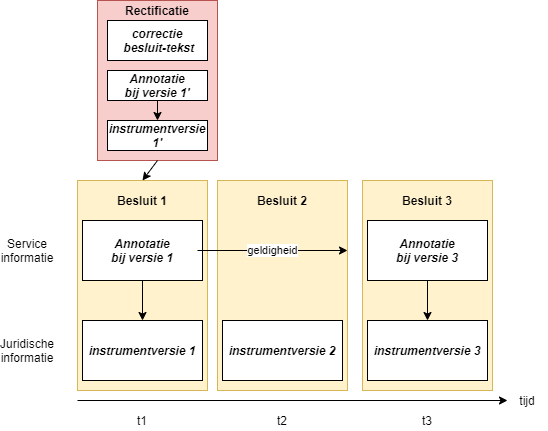
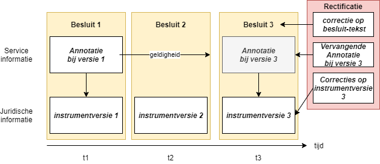

Annotaties in rectificaties
Een rectificatie kan ook de annotaties bij een besluit moeten corrigeren. Alleen annotaties die gecorrigeerd worden, worden met een rectificatie meegeleverd. Annotaties die al correct met het besluit zijn gepubliceerd worden niet opnieuw meegeleverd met de rectificatie.
Besluitannotaties geraakt door een rectificatie
Het betreft de volgende annotaties:
Metadata van het besluit - alleen meeleveren indien de rectificatie tot een wijziging in de metadata van het besluit leidt
Procedureverloop - alleen procedureverloopmutaties meeleveren indien het procedureverloop van het besluit gewijzigd moeten worden door de rectificatie
Toelichtingsrelaties
De consolidatie-informatie van het besluit wordt niet geraakt door een rectificatie. Als de rectificatie correcties aanbrengt waardoor de consolidatie-informatie van het besluit niet meer accuraat is, wordt dat uitgedrukt in consolidatie-informatie die als annotatie bij de rectificatie meegeleverd wordt.
Aanleveren gecorrigeerde annotaties bij een rectificatie
Een rectificatie is een correctie op een gepubliceerd besluit. Een rectificatie bevat o.a. de gecorrigeerde besluittekst en wijzigingen op de regelingmutaties (In onderstaand plaatje instrumentversie 1'). Een rectificatie kan ook tot gevolg hebben dat de annotaties niet meer correct zijn en ook gecorrigeerd moeten worden. Gecorrigeerde annotaties kunnen gelijk met een Rectificatie aangeleverd worden en maken deel uit van de Rectificatie:

Een rectificatie kan nieuwe versies van annotaties bevatten, deze worden tegelijk met de gecorrigeerde besluittekst aangeleverd.
Overigens kan een annotatie sowieso altijd door middel van een directe mutatie gewijzigd worden indien daar, buiten een rectificatie om, aanleiding toe is.
Hoe ziet de rectificatie-annotatie eruit?
Een annotatie wordt initieel aangeleverd met een besluit. Met een rectificatie kan een annotatie gecorrigeerd moeten worden. Omdat STOP al een mechanisme kent om annotaties te corrigeren (directe mutatie) werkt dat bij een rectificatie op dezelfde manier: de annotaties in het te rectificeren besluit, worden door middel van het aanleveren van een volledige nieuwe versie (vervang) gecorrigeerd.

Hoe worden annotaties bij (G)IO's gerectificeerd?
Een rectificatie kan ook een fout herstellen in de annotatie van een, bij het besluit meegeleverde, (G)IO.
Als het een PDF-informatieobject betreft die als bijlage bij het besluit wordt meegeleverd, wordt deze opnieuw, inclusief annotaties aangeleverd met de rectificatie.
Als het een correctie in een GIO betreft, dan moet de rectificatie-tekst ook een wijziging in de Informatieobjecten bijlage van de regeling bevatten. Daar wordt immers verwezen naar de bijbehorende GIO-versie. De rectificatie-tekst corrigeert deze verwijzing zodat deze naar de gerectificeerde GIO-versie wijst. Bij de aanlevering aan het Bronhouderkoppelvlak wordt deze nieuwe GIO-versie met een AanleveringInformatieObject in hetzelfde pakket als de AanleveringRectificatie meegeleverd, net zoals een gewijzigd informatieobject met een besluit wordt meegeleverd. Het GIO wordt dan inclusief nieuwe annotaties aangeleverd. Zie hier voor verdere toelichting.